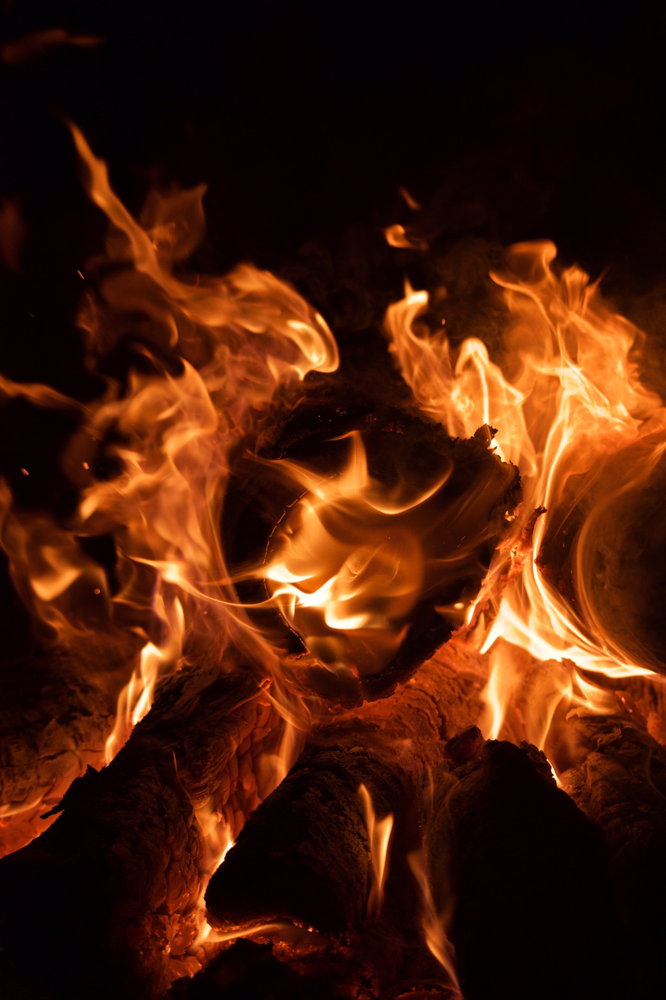

Checklist reset

Gather resources to build a house
Create a table, a chair, and a door for the
👨
GUIDE
Gather ores to improve your equipment
Create a full set of armor with
silver
/
tungsten
Explore caverns, find some
Life Crystals
, and
consume a maximum of 4 of them
Collect some
Fallen Stars
to craft some
Mana Crystals
and use them
👩
NURSE
: use your first
Life Crystal
📅
BLOOD MOON
: use your first
Life Crystal
to unlock the event
👨
MERCHANT
: get 50 silver coins
👨
DEMOLITIONIST
: get an
explosive
👨
DYE TRADER
: find a
dye plant
👩
STYLIST
: free the NPC trapped in a
spiders nest
👨
ANGLER
: talk to the sleeping NPC in the ocean biome
👨
ARMS DEALER
: have at least one
bullet
or a bullet-firing
gun
👨
ZOOLOGIST
: have at least 10% of the
Bestiary filled
(53 entries)
Build a house for every NPC
Buy a
Piggy Bank
from the
👨
MERCHANT
Craft a
Grappling Hook
Increase your maximum mana to 200
Craft some
Spelunker Potions
(illuminates nearby ores, gems, chests and other valuable objects)
Upgrade your gear with
gold
/
platinum
💀
KING SLIME
: summon the boss by using a
Slime Crown
, then defeat it
🛡️ Gear up for the boss (
weapons
,
potions
&
armor
)
Increase your health points to 200 by using a fifth
Life Crystal
💀
EYE OF CTHULHU
: unlock the boss by having at least 200 HP and 3 town NPCs or by summoning it with a
Suspicious Looking Eye
Farm
💀
EYE OF CTHULHU
to gather as much
demonite
as possible
👩
DRYAD
: defeat
💀
EYE OF CTHULHU